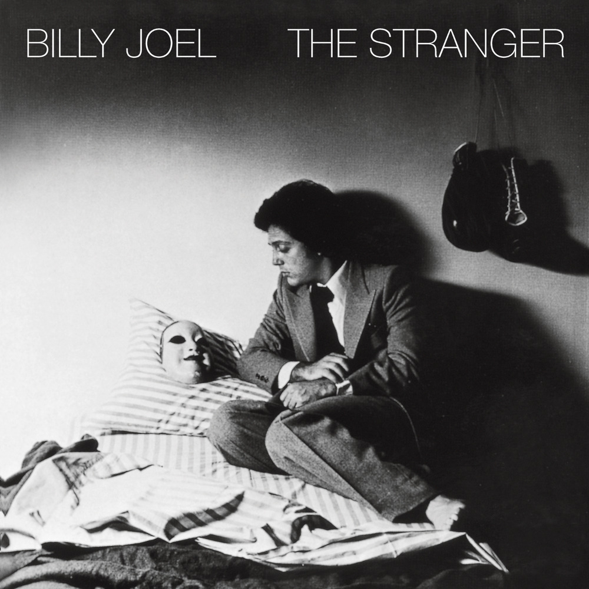

안녕하세요, 라보엠입니다.
오늘은 많은 이들의 사랑을 받는 팝 발라드, 빌리 조엘(Billy Joel)의 노래 ‘Just the Way You Are’를 소개해드리겠습니다. 제가 서울재즈아카데미에서 공부를 시작할 때 처음 받은 과제가 이 곡을 카피하는 것이었는데요, 이 곡은 누구나 한 번쯤은 들어봤을 만큼 익숙한 멜로디와 따뜻한 메시지로 오랜 시간 동안 꾸준히 사랑받고 있습니다. 오늘은 이 노래가 담고 있는 감성과 여운, 그리고 우리에게 전하는 메시지에 대해 이야기해보겠습니다.

감성적인 멜로디와 보컬
‘Just the Way You Are’의 도입부는 잔잔한 피아노와 어쿠스틱 기타가 어우러지면서 시작됩니다. 절제된 편곡과 감성적인 보컬이 조화를 이루며, 곡이 진행될수록 사랑하는 이에 대한 진심이 더욱 깊이 전해집니다. 후렴구에서는 멜로디가 점점 고조되며, 듣는 이의 마음에 따뜻한 울림을 남깁니다. 곡의 마무리는 담담하면서도 여운이 오래 남아, 한동안 마음속에 머물게 됩니다.
이 곡은 사랑하는 사람에게 보내는 응원이자, 동시에 자신에게 건네는 위로이기도 합니다. 누구나 완벽하지 않지만, 그 속에서도 자신만의 아름다움이 있다는 사실을 노래는 조용히 상기시켜줍니다. 가끔은 우리 자신조차도 부족하다고 느낄 때가 있지만, 누군가의 마음속에서는 ‘Just the Way You Are’로도 충분히 소중한 존재가 될 수 있다는 사실이 큰 힘이 됩니다.
[Billy Joel] Just the Way You Are - 담백한 진심이 담긴 가사
Don't go changing to try and please me
You never let me down before, mmm
Don't imagine you're too familiar
And I don't see you anymore
I would not leave you in times of trouble
We never could have come this far, mmm
I took the good times, I'll take the bad times
I'll take you just the way you are
Don't go trying some new fashion
Don't change the color of your hair, mmm
You always have my unspoken passion
Although I might not seem to care
I don't want clever conversation
I never want to work that hard, mmm
I just want someone that I can talk to
I want you just the way you are
I need to know that you will always be
The same old someone that I knew
Oh, but what will it take till you believe in me
The way that I believe in you?
I said I love you, that's forever
And this I promise from the heart, mmm
I couldn't love you any better
I love you just the way you are, right
I don't want clever conversation
I never want to work that hard, mmm
I just want someone that I can talk to
I want you just the way you are
이 곡은 사랑하는 사람을 있는 그대로 받아들이고 싶다는 마음을 솔직하게 담아낸 곡입니다.
“When I see your face, there’s not a thing that I would change,
‘cause you’re amazing just the way you are.”
라는 가사처럼, 상대방의 모든 모습을 소중하게 여기고 존중하는 마음이 곡 전체에 스며 있습니다. 사랑하는 이의 미소, 눈빛, 평범한 하루까지도 특별하게 느껴지는 이유가 바로 여기에 있습니다.
이 노래는 사랑의 본질에 대해 다시 한 번 생각하게 만듭니다. 사랑이란 상대방을 변화시키려 하기보다, 그 사람의 본모습을 있는 그대로 받아들이는 것임을 노래는 조용히 일깨워줍니다. 누군가에게 “변하지 말아줘”라고 말하는 순간, 그 사람의 모든 흔적과 기억이 더욱 소중하게 느껴집니다. 이 곡을 들으며 평소 쉽게 표현하지 못했던 진심을 떠올리게 됩니다.
맺음말
빌리 조엘(Billy Joel)의 ‘Just the Way You Are’는 사랑의 본질을 가장 담백하게 담아낸 곡입니다. 오늘 하루, 이 노래와 함께 사랑하는 이에게 따뜻한 말 한마디를 건네보는 건 어떨까요? 혹은 스스로를 있는 그대로 사랑해주는 마음을 다시 한 번 되새겨보는 시간을 가져보는 것도 좋을 것 같습니다. 이 곡이 여러분의 하루에 작은 위로와 따뜻한 공감이 되어주길 바랍니다.
오늘도 여러분의 일상에 음악이 작은 위로가 되길 바랍니다.